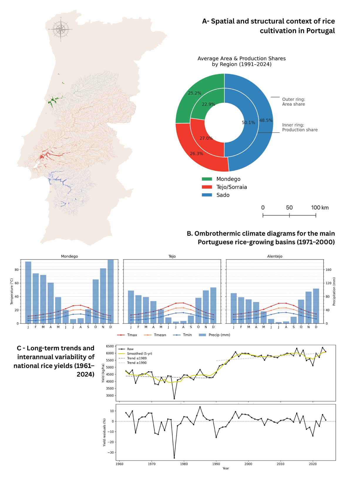
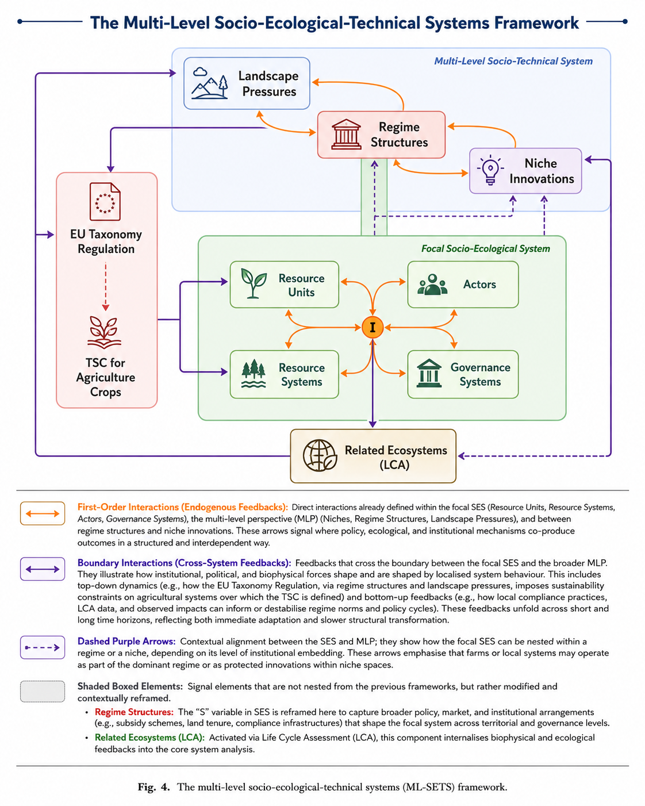
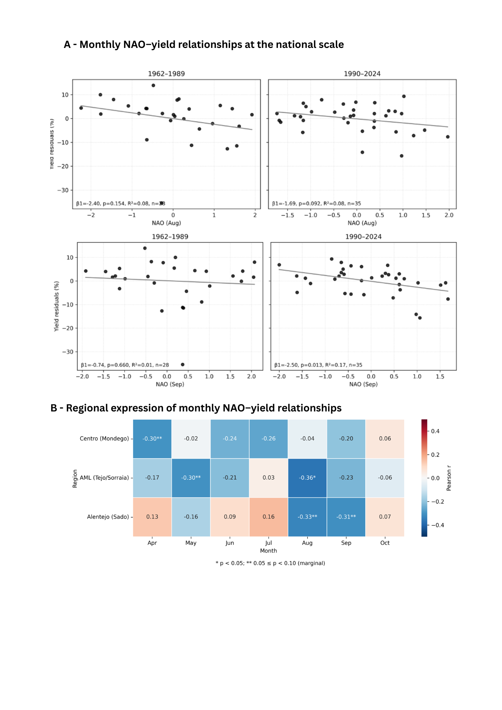
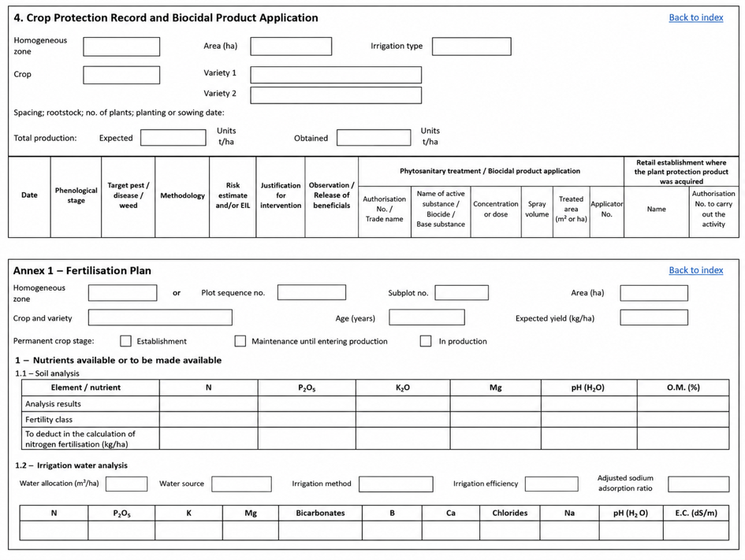
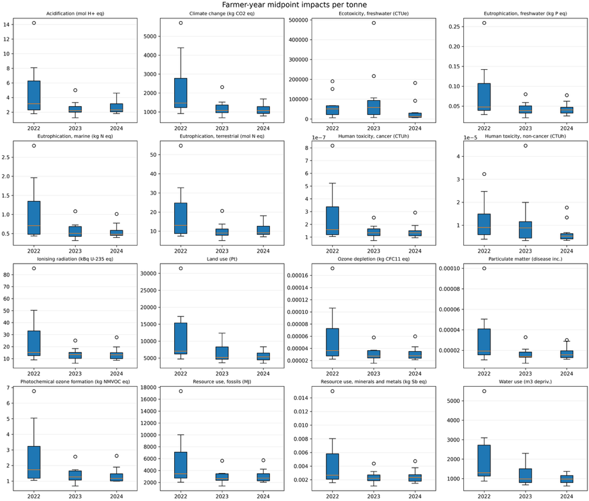
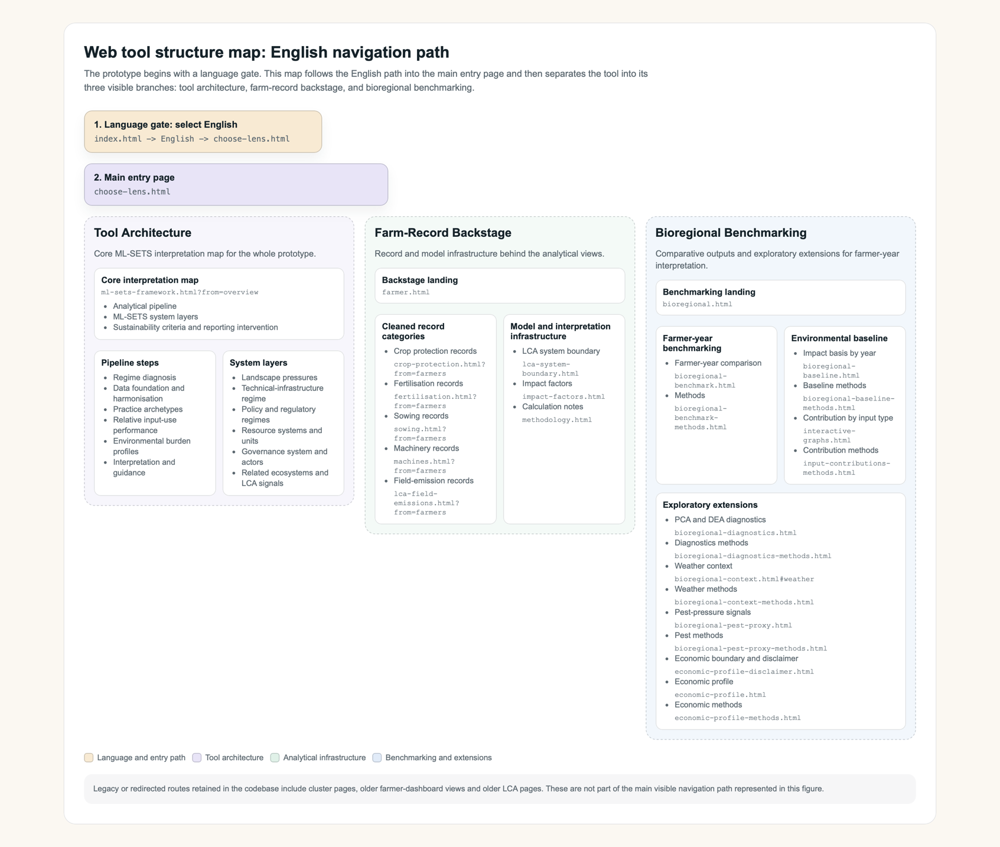
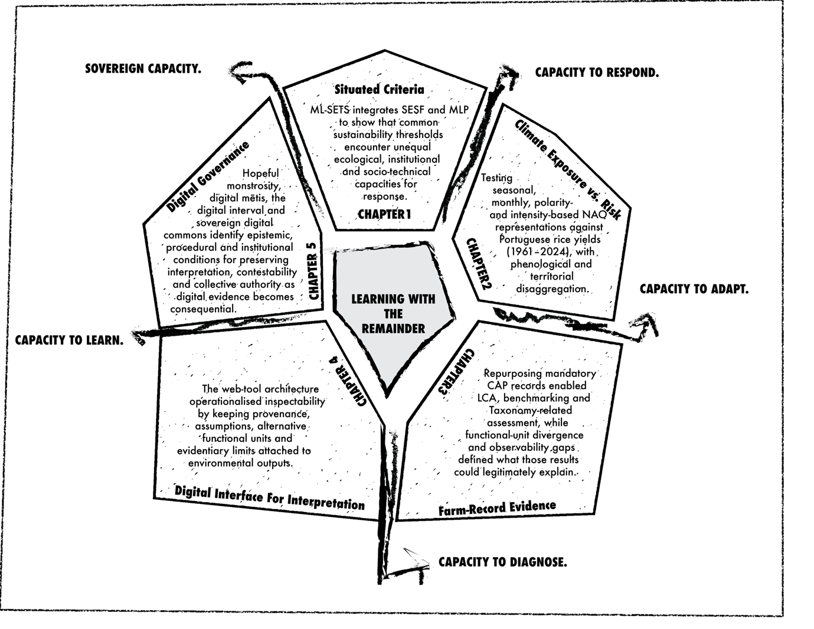

Three deltas
The same crop is exposed to different climatic regimes, water systems, soils and salinity conditions. National averages compress those differences.
A thesis in five analytical lenses
Climate, environmental burdens, farm records and digital governance are not separate stories. They are different views of the same system.
Begin with the fieldSorraia river delta, May 2025 · Photograph by the author
00 · The setting
Rice is concentrated in Portugal's low-lying Mondego, Tejo/Sorraia and Sado basins. Flooding, salinity, infrastructure, market organisation and management choices connect each field to conditions beyond the farm boundary.

The same crop is exposed to different climatic regimes, water systems, soils and salinity conditions. National averages compress those differences.
The farm-record study follows 12 irrigated rice farms from one Sado cooperative across 2022–2024: a shared institutional setting, not a representative sample of Portuguese rice.
Yield, environmental burdens and adaptive options emerge through relations among farms, water, infrastructure, climate, markets, advisory systems and public policy.
The focal point
Each chapter reduces the system differently. The question is not whether to simplify, but what each simplification preserves, what it leaves outside the frame and what action it makes reasonable.
01 · Situated criteria

Proposed nitrogen criteria applied to the Sado sample
The analytical move
ML-SETS connects the resource, actor and governance relations of a situated farming system with wider technological, institutional and market dynamics.
The empirical test
Nitrogen surplus and nitrogen-use efficiency changed sharply across farmer-years. Because harvested output enters both calculations, apparent improvement could arise through greater yield even without a proportional reduction in fertiliser input.
The finding
A weak value may reflect fertiliser management, but also water availability, salinity, crop establishment, pest pressure or shared infrastructure. The relevant lever may sit at several levels at once.
02 · Climate exposure

1961–2024
Seasonal North Atlantic Oscillation relationships were generally weak. More temporally resolved analyses revealed concentrated late-summer associations that broad summaries obscured.
A qualified result
The evidence did not support a single national climate rule. Basin-scale climate–yield correlations were mostly weak or non-significant, reinforcing the need to retain uncertainty and spatial heterogeneity.
The finding
Moving sowing dates or cultivars may shift sensitive stages away from stress, but only where water systems, machinery, coordination and varietal choices leave room to act. Exposure resolution must be matched by response resolution.
03 · Farm-record evidence

Pressure associated with the cultivated area.
Burden relative to realised rice production.

Reuse before new reporting
Crop protection, fertilisation, sowing, machinery operations and cultivated area could be reorganised into farmer-year inventories. Yield had to be linked from cooperative records because notebook harvest fields were inconsistently completed.
Evidence status
Applications document intervention intensity. They do not establish pest abundance, treatment necessity or effectiveness. Fertiliser inputs do not establish crop uptake, surplus or measured field losses.
The functional-unit contrast
Median yield rose from 4.20 t ha⁻¹ in 2022 to 6.61 t ha⁻¹ in 2024. Climate-change impact was nearly unchanged per hectare, yet fell by 26.5% per tonne in 2023 and 26.8% in 2024 relative to 2022.
The finding
Methane, fertilisation, machinery, crop protection and seed production dominated different impact categories. A farmer-year positioned favourably in one domain did not necessarily do so in another.
04 · Interface for interpretation
The prototype connects source records, reconstructed inventories, LCA results, benchmarks and contextual layers without collapsing them into a composite score.

Move from an impact or benchmark to the contributing input, mapped process and original record domain.
Compare per-hectare and per-tonne results without mistaking productivity-mediated change for lower land pressure.
Assumptions and interpretation boundaries remain adjacent to the analytical output.
The interface identifies what additional information would be required for a stronger interpretation.
05 · Digital governance
More data can make agriculture more visible while hiding the interpretive work on which that visibility depends.
I
The capacity to read digital signals through field experience and to question, recalibrate or reject a recommendation when data and material conditions diverge.
II
A protected institutional space between representation and consequential decision, where evidence remains open to review, explanation and contestation.
III
Collective arrangements through which farmers and territorial actors govern access, aggregation, interpretation, reuse and the value generated from agricultural data.
Digitalisation should create room for contextual interpretation, deliberation and collective learning—not remove it.
The converging pathway
From farm records to integrated intelligence for sustainable agricultural competitiveness.
One infrastructure · different questions
Future capability · evidence before inference
Treatment records alone reveal intervention patterns. Additional biological and environmental evidence is required before those patterns can represent pest or disease pressure.
Comparable treatment activity, not observed biological pressure.
The next research programme
Longer panels, direct field monitoring, organic and conventional systems, and contrasting European regions.
CAP records, farm-management systems, accounting, climate, spatial and value-chain information with traceable provenance.
Farmer-controlled access, collective interpretation, contestability and negotiated rules for aggregation and reuse.
Confidential farm feedback, collective diagnostics, bioregional monitoring and policy learning before categorical use.

The thesis-wide proposition
Comparison can open inquiry. It should not close interpretation before the relevant relations, uncertainties and capacities to respond have been examined.